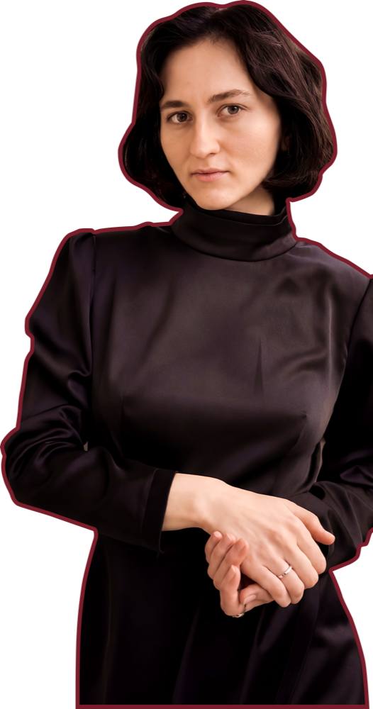
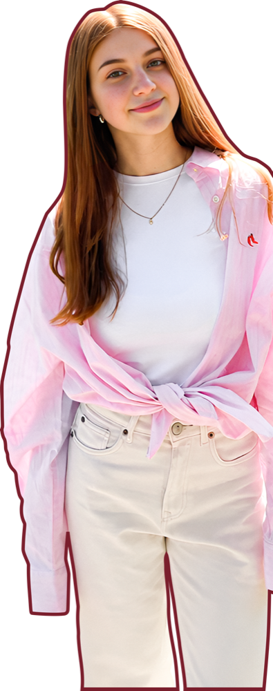

Невелика команда — щоб кожного учня вели особисто. Оберіть викладача під свою мету.
Записатись на пробне →Веде дорослих до вільної розмови та ділової англійської. 12 років викладання.

DianaПідготовка до іспитів IELTS 8.5Доводить до цільового балу в IELTS і TOEFL. Понад 300 успішних учнів.

KseniaДіти та підлітки TKT: YLЛегкий і радісний старт у мові для дітей від 7 років та школярів.